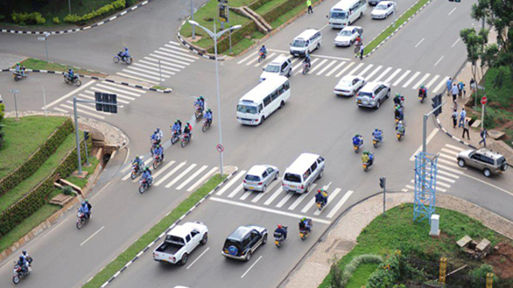
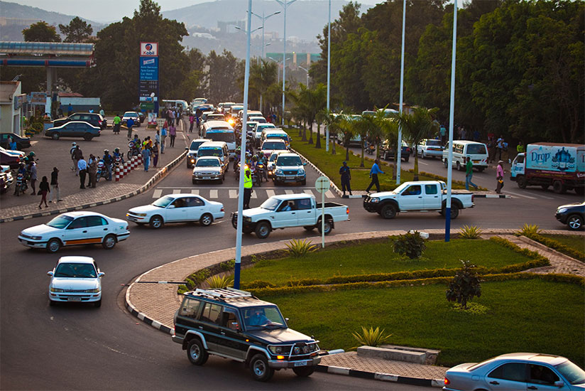
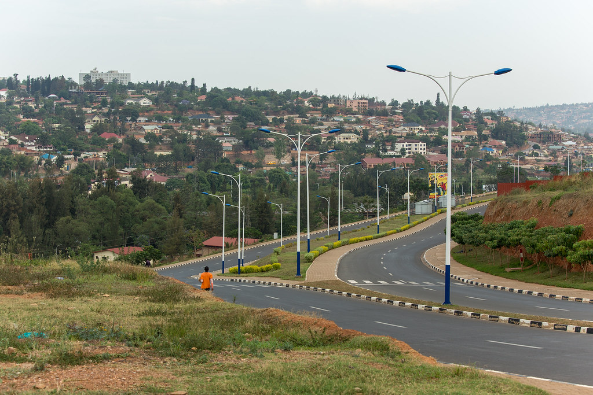
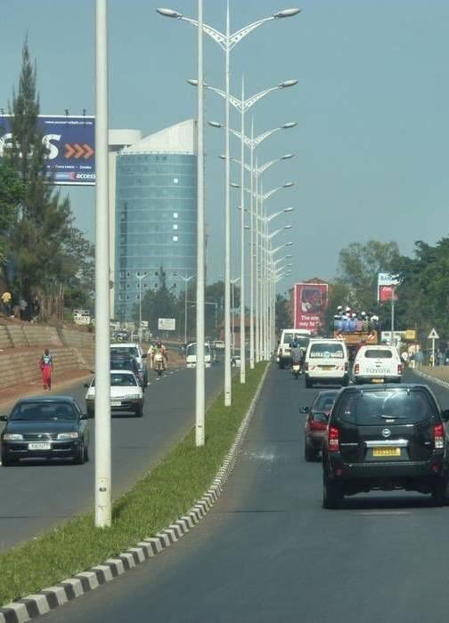
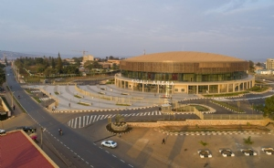
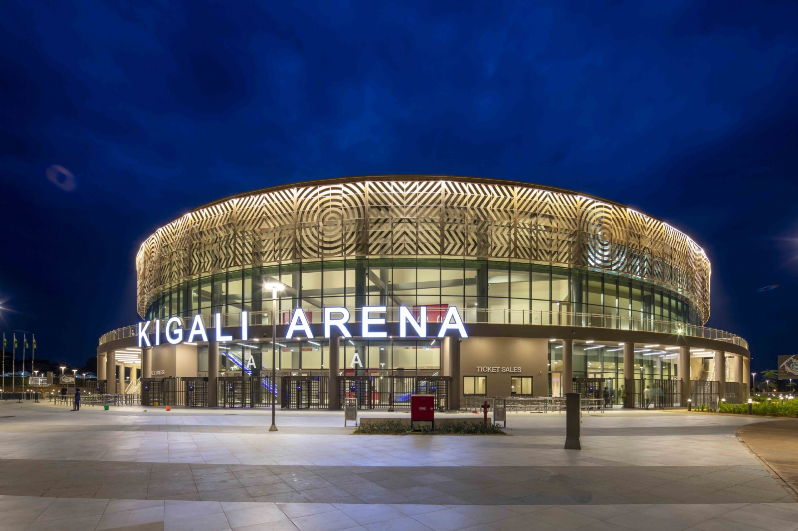
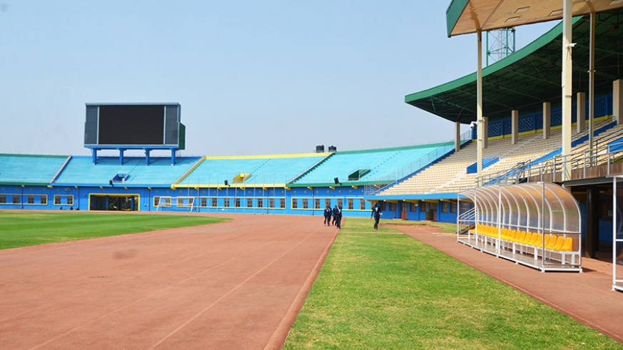
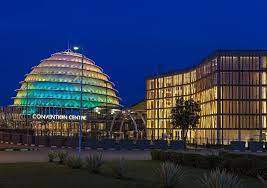
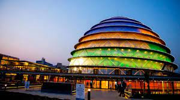
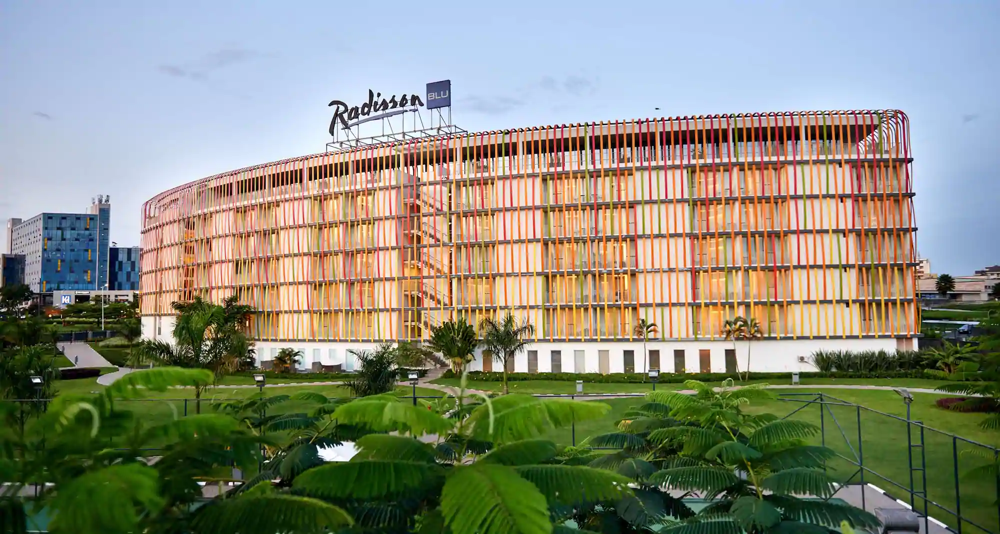

Rwanda is a fast growing country and that means also good infrastructures, starting from the roads,real estates,sport facilities,hotels etc
Lets look at some of the top Infrastructures that put Rwanda on the top.
RwandAir, This is not a new word you hear. Why? The air limited has proved to be one of the best air transport services it offers. With the support of the government, it has a well established airport that offers high class services. It offers transport to many countries around the world. Thinking of travelling? You can try the RwandAir.
Why a Special Economic Zone in Rwanda? Rwanda's SEZ program is designed to address some of the domestic private sector constraints such as availability of industrial and commercial land, availability and the cost of energy, limited transport linkages, market access and reduced bureaucracy and availability of skills.
Kigali Innovation City (KIC) is being developed to be a mixed-use, master-planned, innovation city to be situated on 60 hectares of land in Kigali, Rwanda. KIC will seek to facilitate the development of pan-African talent and act as a technology innovation hub. Its plan includes four universities, office spaces, and start-up business incubators, alongside supporting facilities for retail, hospitality and accommodation.
You can never go wrong with the roads in Rwanda. All the roads are well built. Rwanda are recognized with keeping discipline with the traffic rules that keeps their roads well maintaned. It is now the third African country with best quality roads.
   Rwanda boosts of one of many best sport facilities in Africa. One stop to make is the Kigali Arena. The arena is an indoor basketball court that has a capacity of 10,000 people. Also there are football pitch of higher standards approved by the world stop body to hold competitions. This should be in your bucket list.
  One of the best confrence centre in Africa is found in Rwanda that is the The Kigali Convention Centre.The KCC has 18 different venues which can host more than 5,000 delegates at a time. It features state-of-the-art technology, personalised service and professional facilitation to ensure event success. you can never go wrong with the choices for your events. Other places to host your events include: Kigali Serena Hotel,Mariott Hotel,Eadisson Blu,Hotel Des Millos Collines and many more.
  